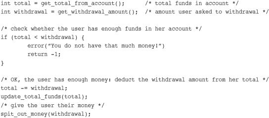
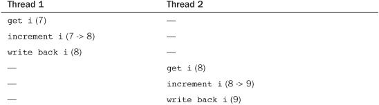
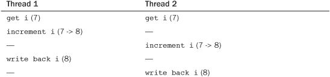
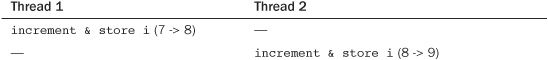
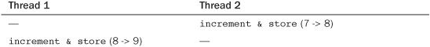
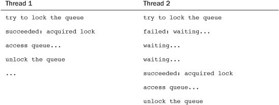
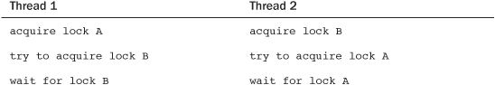
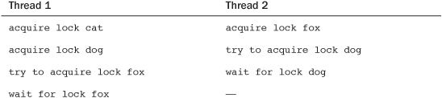

In a shared memory application, developers must ensure that shared resources are protected from concurrent access. The kernel is no exception. Shared resources require protection from concurrent access because if multiple threads of execution1 access and manipulate the data at the same time, the threads may overwrite each other’s changes or access data while it is in an inconsistent state. Concurrent access of shared data is a recipe for instability that often proves hard to track down and debug—getting it right at the start is important.
1 The term threads of execution implies any instance of executing code. This includes, for example, a task in the kernel, an interrupt handler, a bottom half, or a kernel thread. This chapter may shorten threads of execution to simply threads. Keep in mind that this term describes any executing code.
Properly protecting shared resources can be tough. Years ago, before Linux supported symmetrical multiprocessing, preventing concurrent access of data was simple. Because only a single processor was supported, the only way data could be concurrently accessed was if an interrupt occurred or if kernel code explicitly rescheduled and enabled another task to run. With earlier kernels, development was simple.
Those halcyon days are over. Symmetrical multiprocessing support was introduced in the 2.0 kernel and has been continually enhanced ever since. Multiprocessing support implies that kernel code can simultaneously run on two or more processors. Consequently, without protection, code in the kernel, running on two different processors, can simultaneously access shared data at exactly the same time. With the introduction of the 2.6 kernel, the Linux kernel is preemptive. This implies that (again, in the absence of protection) the scheduler can preempt kernel code at virtually any point and reschedule another task. Today, a number of scenarios enable for concurrency inside the kernel, and they all require protection.
This chapter discusses the issues of concurrency and synchronization in the abstract, as they exist in any operating system kernel. The next chapter details the specific mechanisms and interfaces that the Linux kernel provides to solve synchronization issues and prevent race conditions.
Code paths that access and manipulate shared data are called critical regions (also called critical sections). It is usually unsafe for multiple threads of execution to access the same resource simultaneously. To prevent concurrent access during critical regions, the programmer must ensure that code executes atomically—that is, operations complete without interruption as if the entire critical region were one indivisible instruction. It is a bug if it is possible for two threads of execution to be simultaneously executing within the same critical region. When this does occur, we call it a race condition, so-named because the threads raced to get there first. Note how rare a race condition in your code might manifest itself—debugging race conditions is often difficult because they are not easily reproducible. Ensuring that unsafe concurrency is prevented and that race conditions do not occur is called synchronization.
To best understand the need for synchronization, let’s look at the ubiquity of race conditions. For a first example, let’s consider a real-world case: an ATM (Automated Teller Machine, called a cash machine, cashpoint, or ABM outside of the United States).
One of the most common functions performed by cash machines is withdrawing money from an individual’s personal bank account. A person walks up to the machine, inserts an ATM card, types in a PIN, selects Withdrawal, inputs a pecuniary amount, hits OK, takes the money, and mails it to me.
After the user has asked for a specific amount of money, the cash machine needs to ensure that the money actually exists in that user’s account. If the money exists, it then needs to deduct the withdrawal from the total funds available. The code to implement this would look something like

Now, let’s presume that another deduction in the user’s funds is happening at the same time. It does not matter how the simultaneous deduction is happening: Assume that the user’s spouse is initiating another withdrawal at another ATM, a payee is electronically transferring funds out of the account, or the bank is deducting a fee from the account (as banks these days are so wont to do). Any of these scenarios fits our example.
Both systems performing the withdrawal would have code similar to what we just looked at: First check whether the deduction is possible, then compute the new total funds, and finally execute the physical deduction. Now let’s make up some numbers. Presume that the first deduction is a withdrawal from an ATM for $100 and that the second deduction is the bank applying a fee of $10 because the customer walked into the bank. Assume the customer has a total of $105 in the bank. Obviously, one of these transactions cannot correctly complete without sending the account into the red.
What you would expect is something like this: The fee transaction happens first. Ten dollars is less than $105, so 10 is subtracted from 105 to get a new total of 95, and $10 is pocketed by the bank. Then the ATM withdrawal comes along and fails because $95 is less than $100.
With race conditions, life can be much more interesting. Assume that the two transactions are initiated at roughly the same time. Both transactions verify that sufficient funds exist: $105 is more than both $100 and $10, so all is good. Then the withdrawal process subtracts $100 from $105, yielding $5. The fee transaction then does the same, subtracting $10 from $105 and getting $95. The withdrawal process then updates the user’s new total available funds to $5. Now the fee transaction also updates the new total, resulting in $95. Free money!
Clearly, financial institutions must ensure that this can never happen. They must lock the account during certain operations, making each transaction atomic with respect to any other transaction. Such transactions must occur in their entirety, without interruption, or not occur at all.
Now, let’s look at a specific computing example. Consider a simple shared resource, a single global integer, and a simple critical region, the operation of merely incrementing it:
i++;
This might translate into machine instructions to the computer’s processor that resemble the following:
get the current value of i and copy it into a register
add one to the value stored in the register
write back to memory the new value of i
Now, assume that there are two threads of execution, both enter this critical region, and the initial value of i is 7. The desired outcome is then similar to the following (with each row representing a unit of time):

As expected, 7 incremented twice is 9. A possible outcome, however, is the following:

If both threads of execution read the initial value of i before it is incremented, both threads increment and save the same value. As a result, the variable i contains the value 8 when, in fact, it should now contain 9. This is one of the simplest examples of a critical region. Thankfully, the solution is equally as simple: We merely need a way to perform these operations in one indivisible step. Most processors provide an instruction to atomically read, increment, and write back a single variable. Using this atomic instruction, the only possible outcome is

Or conversely

It would never be possible for the two atomic operations to interleave. The processor would physically ensure that it was impossible. Using such an instruction would alleviate the problem. The kernel provides a set of interfaces that implement these atomic instructions; they are discussed in the next chapter.
Now, let’s consider a more complicated race condition that requires a more complicated solution. Assume you have a queue of requests that needs to be serviced. For this exercise, let’s assume the implementation is a linked list, in which each node represents a request. Two functions manipulate the queue. One function adds a new request to the tail of the queue. Another function removes a request from the head of the queue and does something useful with the request. Various parts of the kernel invoke these two functions; thus, requests are continually being added, removed, and serviced. Manipulating the request queues certainly requires multiple instructions. If one thread attempts to read from the queue while another is in the middle of manipulating it, the reading thread will find the queue in an inconsistent state. It should be apparent the sort of damage that could occur if access to the queue could occur concurrently. Often, when the shared resource is a complex data structure, the result of a race condition is corruption of the data structure.
The previous scenario, at first, might not have a clear solution. How can you prevent one processor from reading from the queue while another processor is updating it? Although it is feasible for a particular architecture to implement simple instructions, such as arithmetic and comparison, atomically it is ludicrous for architectures to provide instructions to support the indefinitely sized critical regions that would exist in the previous example. What is needed is a way of making sure that only one thread manipulates the data structure at a time—a mechanism for preventing access to a resource while another thread of execution is in the marked region.
A lock provides such a mechanism; it works much like a lock on a door. Imagine the room beyond the door as the critical region. Inside the room, only one thread of execution can be present at a given time. When a thread enters the room, it locks the door behind it. When the thread is finished manipulating the shared data, it leaves the room and unlocks the door. If another thread reaches the door while it is locked, it must wait for the thread inside to exit the room and unlock the door before it can enter. Threads hold locks; locks protect data.
In the previous request queue example, a single lock could have been used to protect the queue. Whenever there was a new request to add to the queue, the thread would first obtain the lock. Then it could safely add the request to the queue and ultimately release the lock. When a thread wanted to remove a request from the queue, it too would obtain the lock. Then it could read the request and remove it from the queue. Finally, it would release the lock. Any other access to the queue would similarly need to obtain the lock. Because the lock can be held by only one thread at a time, only a single thread can manipulate the queue at a time. If a thread comes along while another thread is already updating it, the second thread has to wait for the first to release the lock before it can continue. The lock prevents concurrency and protects the queue from race conditions.
Any code that accesses the queue first needs to obtain the relevant lock. If another thread of execution comes along, the lock prevents concurrency:

Notice that locks are advisory and voluntary. Locks are entirely a programming construct that the programmer must take advantage of. Nothing prevents you from writing code that manipulates the fictional queue without the appropriate lock. Such a practice, of course, would eventually result in a race condition and corruption.
Locks come in various shapes and sizes—Linux alone implements a handful of different locking mechanisms. The most significant difference between the various mechanisms is the behavior when the lock is unavailable because another thread already holds it—some lock variants busy wait,2 whereas other locks put the current task to sleep until the lock becomes available. The next chapter discusses the behavior of the different locks in Linux and their interfaces.
2 That is, spin in a tight loop, checking the status of the lock over and over, waiting for the lock to become available.
Astute readers are now screaming. The lock does not solve the problem; it simply shrinks the critical region down to just the lock and unlock code: probably much smaller, sure, but still a potential race! Fortunately, locks are implemented using atomic operations that ensure no race exists. A single instruction can verify whether the key is taken and, if not, seize it. How this is done is architecture-specific, but almost all processors implement an atomic test and set instruction that tests the value of an integer and sets it to a new value only if it is zero. A value of zero means unlocked. On the popular x86 architecture, locks are implemented using such a similar instruction called compare and exchange.
In user-space, the need for synchronization stems from the fact that programs are scheduled preemptively at the will of the scheduler. Because a process can be preempted at any time and another process can be scheduled onto the processor, a process can be involuntarily preempted in the middle of accessing a critical region. If the newly scheduled process then enters the same critical region (say, if the two processes manipulate the same shared memory or write to the same file descriptor), a race can occur. The same problem can occur with multiple single-threaded processes sharing files, or within a single program with signals, because signals can occur asynchronously. This type of concurrency—in which two things do not actually happen at the same time but interleave with each other such that they might as well—is called pseudo-concurrency.
If you have a symmetrical multiprocessing machine, two processes can actually be executed in a critical region at the exact same time. That is called true concurrency. Although the causes and semantics of true versus pseudo concurrency are different, they both result in the same race conditions and require the same sort of protection.
The kernel has similar causes of concurrency:
• Interrupts— An interrupt can occur asynchronously at almost any time, interrupting the currently executing code.
• Softirqs and tasklets— The kernel can raise or schedule a softirq or tasklet at almost any time, interrupting the currently executing code.
• Kernel preemption— Because the kernel is preemptive, one task in the kernel can preempt another.
• Sleeping and synchronization with user-space— A task in the kernel can sleep and thus invoke the scheduler, resulting in the running of a new process.
• Symmetrical multiprocessing— Two or more processors can execute kernel code at exactly the same time.
Kernel developers need to understand and prepare for these causes of concurrency. It is a major bug if an interrupt occurs in the middle of code that is manipulating a resource and the interrupt handler can access the same resource. Similarly, it is a bug if kernel code is preemptive while it is accessing a shared resource. Likewise, it is a bug if code in the kernel sleeps while in the middle of a critical section. Finally, two processors should never simultaneously access the same piece of data. With a clear picture of what data needs protection, it is not hard to provide the locking to keep the system stable. Rather, the hard part is identifying these conditions and realizing that to prevent concurrency, you need some form of protection.
Let us reiterate this point, because it is important. Implementing the actual locking in your code to protect shared data is not difficult, especially when done early on during the design phase of development. The tricky part is identifying the actual shared data and the corresponding critical sections. This is why designing locking into your code from the get-go, and not as an afterthought, is of paramount importance. It can be difficult to go in, ex post, and identify critical regions and retrofit locking into the existing code. The resulting code is often not pretty, either. The takeaway from this is to always design proper locking into your code from the beginning.
Code that is safe from concurrent access from an interrupt handler is said to be interrupt-safe. Code that is safe from concurrency on symmetrical multiprocessing machines is SMP-safe. Code that is safe from concurrency with kernel preemption is preempt-safe.3 The actual mechanisms used to provide synchronization and protect against race conditions in all these cases is covered in the next chapter.
3 You will also see that, barring a few exceptions, being SMP-safe implies being preempt-safe.
Identifying what data specifically needs protection is vital. Because any data that can be accessed concurrently almost assuredly needs protection, it is often easier to identify what data does not need protection and work from there. Obviously, any data that is local to one particular thread of execution does not need protection, because only that thread can access the data. For example, local automatic variables (and dynamically allocated data structures whose address is stored only on the stack) do not need any sort of locking because they exist solely on the stack of the executing thread. Likewise, data that is accessed by only a specific task does not require locking (because a process can execute on only one processor at a time).
What does need locking? Most global kernel data structures do. A good rule of thumb is that if another thread of execution can access the data, the data needs some sort of locking; if anyone else can see it, lock it. Remember to lock data, not code.
CONFIG Options: SMP Versus UP
Because the Linux kernel is configurable at compile time, it makes sense that you can tailor the kernel specifically for a given machine. Most important, the
CONFIG_SMPconfigure option controls whether the kernel supports SMP. Many locking issues disappear on uniprocessor machines; consequently, whenCONFIG_SMPis unset, unnecessary code is not compiled into the kernel image. For example, such configuration enables uniprocessor machines to forego the overhead of spin locks. The same trick applies toCONFIG_PREEMPT(the configure option enabling kernel preemption). This was an excellent design decision—the kernel maintains one clean source base, and the various locking mechanisms are used as needed. Different combinations ofCONFIG_SMPandCONFIG_PREEMPTon different architectures compile in varying lock support.In your code, provide appropriate protection for the most pessimistic case, SMP with kernel preemption, and all scenarios will be covered.
Whenever you write kernel code, you should ask yourself these questions:
• Is the data global? Can a thread of execution other than the current one access it?
• Is the data shared between process context and interrupt context? Is it shared between two different interrupt handlers?
• If a process is preempted while accessing this data, can the newly scheduled process access the same data?
• Can the current process sleep (block) on anything? If it does, in what state does that leave any shared data?
• What prevents the data from being freed out from under me?
• What happens if this function is called again on another processor?
• Given the proceeding points, how am I going to ensure that my code is safe from concurrency?
In short, nearly all global and shared data in the kernel requires some form of the synchronization methods, discussed in the next chapter.
A deadlock is a condition involving one or more threads of execution and one or more resources, such that each thread waits for one of the resources, but all the resources are already held. The threads all wait for each other, but they never make any progress toward releasing the resources that they already hold. Therefore, none of the threads can continue, which results in a deadlock.
A good analogy is a four-way traffic stop. If each car at the stop decides to wait for the other cars before going, no car will ever proceed, and we have a traffic deadlock.
The simplest example of a deadlock is the self-deadlock:4 If a thread of execution attempts to acquire a lock it already holds, it has to wait for the lock to be released. But it will never release the lock, because it is busy waiting for the lock, and the result is deadlock:
4 Some kernels prevent this type of deadlock by providing recursive locks. These are locks that a single thread of execution may acquire multiple times. Linux, thankfully, does not provide recursive locks. This is widely considered a good thing. Although recursive locks might alleviate the self-deadlock problem, they very readily lead to sloppy locking semantics.
acquire lock
acquire lock, again
wait for lock to become available
...
Similarly, consider n threads and n locks. If each thread holds a lock that the other thread wants, all threads block while waiting for their respective locks to become available. The most common example is with two threads and two locks, which is often called the deadly embrace or the ABBA deadlock:

Each thread is waiting for the other, and neither thread will ever release its original lock; therefore, neither lock will become available.
Prevention of deadlock scenarios is important. Although it is difficult to prove that code is free of deadlocks, you can write deadlock-free code. A few simple rules go a long way:
• Implement lock ordering. Nested locks must always be obtained in the same order. This prevents the deadly embrace deadlock. Document the lock ordering so others will follow it.
• Prevent starvation. Ask yourself, does this code always finish? If foo does not occur, will bar wait forever?
• Do not double acquire the same lock.
• Design for simplicity. Complexity in your locking scheme invites deadlocks.
The first point is most important and worth stressing. If two or more locks are acquired at the same time, they must always be acquired in the same order. Let’s assume you have the cat, dog, and fox locks that protect data structures of the same name. Now assume you have a function that needs to work on all three of these data structures simultaneously—perhaps to copy data between them. Whatever the case, the data structures require locking to ensure safe access. If one function acquires the locks in the order cat, dog, and then fox, then every other function must obtain these locks (or a subset of them) in this same order. For example, it is a potential deadlock (and hence a bug) to first obtain the fox lock and then obtain the dog lock because the dog lock must always be acquired prior to the fox lock. Here is an example in which this would cause a deadlock:

Thread one is waiting for the fox lock, which thread two holds, while thread two is waiting for the dog lock, which thread one holds. Neither ever releases its lock and hence both wait forever—bam, deadlock. If the locks were always obtained in the same order, a deadlock in this manner would not be possible.
Whenever locks are nested within other locks, a specific ordering must be obeyed. It is good practice to place the ordering in a comment above the lock. Something like the following is a good idea:
/*
* cat_lock – locks access to the cat structure
* always obtain before the dog lock!
*/
The order of unlock does not matter with respect to deadlock, although it is common practice to release the locks in an order inverse to that in which they were acquired.
Preventing deadlocks is important. The Linux kernel has some basic debugging facilities for detecting deadlock scenarios in a running kernel. These features are discussed in the next chapter.
The term lock contention, or simply contention, describes a lock currently in use but that another thread is trying to acquire. A lock that is highly contended often has threads waiting to acquire it. High contention can occur because a lock is frequently obtained, held for a long time after it is obtained, or both. Because a lock’s job is to serialize access to a resource, it comes as no surprise that locks can slow down a system’s performance. A highly contended lock can become a bottleneck in the system, quickly limiting its performance. Of course, the locks are also required to prevent the system from tearing itself to shreds, so a solution to high contention must continue to provide the necessary concurrency protection.
Scalability is a measurement of how well a system can be expanded. In operating systems, we talk of the scalability with a large number of processes, a large number of processors, or large amounts of memory. We can discuss scalability in relation to virtually any component of a computer to which we can attach a quantity. Ideally, doubling the number of processors should result in a doubling of the system’s processor performance. This, of course, is never the case.
The scalability of Linux on a large number of processors has increased dramatically in the time since multiprocessing support was introduced in the 2.0 kernel. In the early days of Linux multiprocessing support, only one task could execute in the kernel at a time. During 2.2, this limitation was removed as the locking mechanisms grew more fine-grained. Through 2.4 and onward, kernel locking became even finer grained. Today, in the 2.6 Linux kernel, kernel locking is very fine-grained and scalability is good.
The granularity of locking is a description of the size or amount of data that a lock protects. A very coarse lock protects a large amount of data—for example, an entire subsystem’s set of data structures. On the other hand, a very fine-grained lock protects a small amount of data—say, only a single element in a larger structure. In reality, most locks fall somewhere in between these two extremes, protecting neither an entire subsystem nor an individual element, but perhaps a single structure or list of structures. Most locks start off fairly coarse and are made more fine-grained as lock contention proves to be a problem.
One example of evolving to finer-grained locking is the scheduler runqueues, discussed in Chapter 4, “Process Scheduling.” In 2.4 and prior kernels, the scheduler had a single runqueue. (Recall that a runqueue is the list of runnable processes.) Early in the 2.6 series, the O(1) scheduler introduced per-processor runqueues, each with a unique lock. The locking evolved from a single global lock to separate locks for each processor. This was an important optimization, because the runqueue lock was highly contended on large machines, essentially serializing the entire scheduling process down to a single processor executing in the scheduler at a time. Later in the 2.6 series, the CFS Scheduler improved scalability further.
Generally, this scalability improvement is a good thing because it improves Linux’s performance on larger and more powerful systems. Rampant scalability “improvements” can lead to a decrease in performance on smaller SMP and UP machines, however, because smaller machines may not need such fine-grained locking but will nonetheless need to put up with the increased complexity and overhead. Consider a linked list. An initial locking scheme would provide a single lock for the entire list. In time, this single lock might prove to be a scalability bottleneck on large multiprocessor machines that frequently access this linked list. In response, the single lock could be broken up into one lock per node in the linked list. For each node that you wanted to read or write, you obtained the node’s unique lock. Now there is only lock contention when multiple processors are accessing the same exact node. What if there is still lock contention, however? Do you provide a lock for each element in each node? Each bit of each element? The answer is no. Even though this fine-grained locking might ensure excellent scalability on large SMP machines, how does it perform on dual processor machines? The overhead of all those extra locks is wasted if a dual processor machine does not see significant lock contention to begin with.
Nonetheless, scalability is an important consideration. Designing your locking from the beginning to scale well is important. Coarse locking of major resources can easily become a bottleneck on even small machines. There is a thin line between too-coarse locking and too-fine locking. Locking that is too coarse results in poor scalability if there is high lock contention, whereas locking that is too fine results in wasteful overhead if there is little lock contention. Both scenarios equate to poor performance. Start simple and grow in complexity only as needed. Simplicity is key.
Making your code SMP-safe is not something that can be added as an afterthought. Proper synchronization—locking that is free of deadlocks, scalable, and clean—requires design decisions from start through finish. Whenever you write kernel code, whether it is a new system call or a rewritten driver, protecting data from concurrent access needs to be a primary concern.
Provide sufficient protection for every scenario—SMP, kernel preemption, and so on—and rest assured the data will be safe on any given machine and configuration. The next chapter discusses just how to do this.
With the fundamentals and the theories of synchronization, concurrency, and locking behind us, let’s now dive into the actual tools that the Linux kernel provides to ensure that your code is race- and deadlock-free.